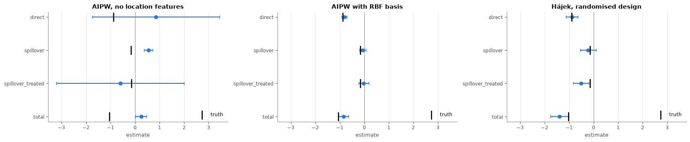

This notebook separates the direct effect of the community-health-worker program from the spillover onto neighbouring counties, and from the total of the two. The data are Scenario A with spillovers (y) and Queen neighbours. The spillover slope is \(\delta=-0.4\).
Estimation uses an exposure mapping, observational AIPW with generalised propensities, the design-based Hájek estimator, and a linear-in-means regression. The functions are ExposureMapping and InterferenceEstimator in geolattice.spatial_analysis.spatialcausal.
Health programs rarely stop at county lines: outreach workers, clinics and media reach neighbouring counties. Then a county’s outcome depends on its neighbours’ treatment as well as its own, which violates SUTVA.
Scenario A with spillovers: \(Y_i=Y_i(0)+\tau_iT_i+\delta\,(WT)_i\) with \(\delta=-0.4\) and \((WT)_i\) the share of treated Queen neighbours. The confounder \(U(s)\) is still present.
Installation. This notebook needs installation option 3 (core, spatial analysis and spatial statistics): pip install "geolattice[statistics]". See “Installation options” in the GeoLattice README.
Code
import warningswarnings.filterwarnings("ignore")import numpy as np, pandas as pd, matplotlib.pyplot as pltimport geolattice.spatial_analysis.spatialcausal as sc, countycausal as cc, tutorial_style as tsfrom geolattice.spatial_analysis.spatialcausal._utils import as_sparse_weightsts.use()gA, w, truth = cc.scenario_program()X = gA[cc.COVARIATES].to_numpy()xy = cc.coords_km(gA)T, y, tau, share = gA["T"].to_numpy(), gA["y"].to_numpy(), gA["tau"].to_numpy(), gA["share_treated"].to_numpy()delta = truth["delta"]
Potential outcomes under interference
With interference each county has a potential outcome for every assignment vector, \(Y_i(\mathbf t)\), \(\mathbf t\in\{0,1\}^n\), which is far too many to learn anything. An exposure mapping (Aronow & Samii, 2017) reduces \(\mathbf t\) to a few conditions,
own treatment × “high” neighbourhood exposure (share of treated neighbours at least \(c=0.5\)). The mapping is correct if \(Y_i(\mathbf t)=Y_i(\mathbf t')\) whenever \(f_i(\mathbf t)=f_i(\mathbf t')\). Then \(Y_i(c)\) is well defined and the estimands are averages \(\mu(c)=\frac1n\sum_iY_i(c)\):
\[\underbrace{\mu(10)-\mu(00)}_{\text{direct}},\quad
\underbrace{\mu(01)-\mu(00)}_{\text{spillover on controls}},\quad
\underbrace{\mu(11)-\mu(10)}_{\text{spillover on treated}},\quad
\underbrace{\mu(11)-\mu(00)}_{\text{total}}.\]
Neighbourhoods come from any geolattice.spatial_statistics weights object; here the Queen weights.
The true spillover is linear in the continuous share, so the binary mapping is misspecified: a county in condition 01 can have any share between 0.5 and 1. What an inverse-probability or AIPW estimator of \(\mu(c)\) then targets is the county average of \(\mathbb E[Y_i\mid C_i=c]\), which involves each county’s expected share given its condition:
These expectations depend on the assignment mechanism. Because we know it (the true propensities \(e_i\)), cc.implied_exposure_contrasts computes the targets exactly by redrawing treatment 2,000 times. A naive shortcut, comparing average shares within observed conditions, gets them wrong: inverse-probability weights up-weight counties for which high exposure is rare (many neighbours), and those counties’ shares sit just above the threshold.
Observational estimation: AIPW with generalised propensities
In observational data treatment is not randomised, and a county’s exposure depends on its neighbours’ covariates as well as its own. Let \(Z_i=(X_i,(WX)_i,S_i)\) collect own covariates, neighbours’ average covariates and location features. The generalised propensity is \(\pi_i(c)=P(C_i=c\mid Z_i)\) (multinomial logistic), and \(m_c(Z)=\mathbb E[Y\mid C=c,Z]\) is an outcome model per condition. The doubly robust estimator of \(\mu(c)\) is
It is consistent if either the propensity or the outcome model is correct, and nuisance models are cross-fitted on spatial blocks. The per-unit terms are influence contributions, so contrast SEs use the same iid / Conley / block machinery as notebook 01.
First, AIPW without location features, so \(U\) is not adjusted for.
The spillover and total contrasts have the wrong sign, and the direct effect is unusable (its standard error exceeds 1): without location information some counties get extreme generalised propensities. High-exposure counties sit in clusters of treated counties, which is where \(U\) is high, and \(U\) raises diabetes. This is spatial confounding of the spillover contrast. As in notebook 01, the fix is a basis rich enough to represent \(U\): we add 155 radial basis functions. We compare two feature sets, with and without the neighbours’ average covariates \(WX\), and trim generalised propensities at 0.05.
With the RBF basis the signs are right, the direct effect is close to its target, and the total effect is within about two standard errors. Adding \(WX\) changes little here, apart from a modest rise in standard errors (more features, slightly worse overlap). (Features are standardised inside the estimator; on unscaled features the multinomial propensity model converged poorly, which earlier made the \(WX\) variant look far worse than it is.) The spillover contrasts remain attenuated: only about a quarter of control counties are highly exposed, and the binary mapping discards the information in the continuous share.
A linear-in-means model for the spillover slope
When spillovers plausibly scale with the share of treated neighbours, model the share directly:
Here \(\delta\) is the effect of moving from no treated neighbours to all neighbours treated. With heterogeneous \(\tau_i\) the coefficient \(\tau\) is a variance-weighted average (as in notebook 01). \(\delta\) is identified from variation in neighbours’ treatment given own treatment, covariates and the smooth basis. We estimate it by OLS and use Conley standard errors from the OLS influence function \(\psi_i=n\,(A^\top A)^{-1}a_i\hat\varepsilon_i\).
Code
A = np.column_stack([np.ones(len(y)), T, share, X, S])beta, *_ = np.linalg.lstsq(A, y, rcond=None)resid = y - A @ betaAinv = np.linalg.pinv(A.T @ A /len(y))psi = (A * resid[:, None]) @ Ainv.Tlim = pd.DataFrame({"estimate": beta[1:3],"se (Conley 150 km)": [sc.standard_error(psi[:, j], xy, "conley", cutoff=150) for j in (1, 2)],"truth": [truth["plm_estimand"], delta]}, index=["tau (own treatment)", "delta (share of neighbours)"])lim.round(3)
estimate
se (Conley 150 km)
truth
tau (own treatment)
-0.882
0.031
-0.907
delta (share of neighbours)
-0.422
0.062
-0.400
Design-based estimation in a randomised experiment
If the program were assigned at random with a known design, no outcome or propensity model would be needed. The design fixes each county’s probability \(\pi_i(c)\) of landing in each exposure condition, which we compute by simulating the design (exposure_probabilities). The Horvitz-Thompson and Hájek estimators are
Hájek is slightly biased but far more stable. Note that \(\pi_i(c)\) differs across counties even under simple Bernoulli assignment: a county with 2 neighbours reaches “≥50% treated neighbours” much more easily than one with 10.
We re-run history: assign the program by Bernoulli(0.4) instead of self-selection and generate the outcomes with the same effects.
range of P(control, high exposure) across counties: [0.166 0.239 0.316]
estimate
se
ci_lower
ci_upper
target
effect
direct
-0.886
0.123
-1.128
-0.645
-0.890
spillover
-0.226
0.163
-0.546
0.093
-0.144
spillover_treated
-0.510
0.160
-0.824
-0.195
-0.143
total
-1.396
0.191
-1.770
-1.022
-1.034
In this particular draw the spillover-on-treated estimate lies well away from its target. A single randomisation is one draw from the design. Re-running the experiment 60 times shows the estimator’s actual sampling distribution, which we can compare with its average and with the reported standard error.
Over repeated randomisations the Hájek estimator is centred on its targets. The reported Conley standard error is close to, but slightly smaller than, the Monte Carlo spread for the spillover and total contrasts, so a single experiment’s interval is a little too narrow: exposure conditions of neighbouring counties are correlated by construction, a dependence that design-based variance estimators for interference handle only approximately (Aronow & Samii, 2017).
Code
fig, ax = plt.subplots(1, 3, figsize=(17, 3.6), sharex=True)for a, (title, r, tr) inzip(ax, [("AIPW, no location features", aipw_plain.result_.to_frame(), implied), ("AIPW with RBF basis", aipw.result_.to_frame(), implied), ("Hájek, randomised design", hajek.result_.to_frame(), implied_r)]): ts.forest(a, r.index, r.estimate, r.ci_lower, r.ci_upper, truth=[tr[k] for k in r.index], title=title)plt.tight_layout()

Summary and Conclusions
Interference needs an explicit exposure mapping. The estimands are contrasts between exposure conditions, not a single “treatment effect”.
Spillover contrasts are also spatially confounded: high-exposure areas are treated clusters. Location features that represent the confounder are essential in observational data.
A coarse mapping is misspecified when exposure acts continuously. The estimand silently becomes a contrast between typical exposure levels, and power is lost. A linear-in-means model recovers the slope when its functional form is right.
Under a known randomised design, Hájek estimation needs no outcome model and is centred on its target. The exposure probabilities vary with each county’s number of neighbours and must be computed from the design.
With a misspecified mapping the estimand depends on the assignment mechanism. Compute it explicitly (here by simulation) rather than by averaging observed shares.
Resources
Papers
Reference
Notes
Aronow & Samii (2017)
Exposure mappings and design-based estimation under interference
In this library
Object
Role
ExposureMapping
Own treatment \(\times\) high neighbourhood exposure
InterferenceEstimator
AIPW with generalised propensities
cc.implied_exposure_contrasts
Exact targets when the binary mapping is misspecified
Hájek estimator
Design-based means when the assignment mechanism is known